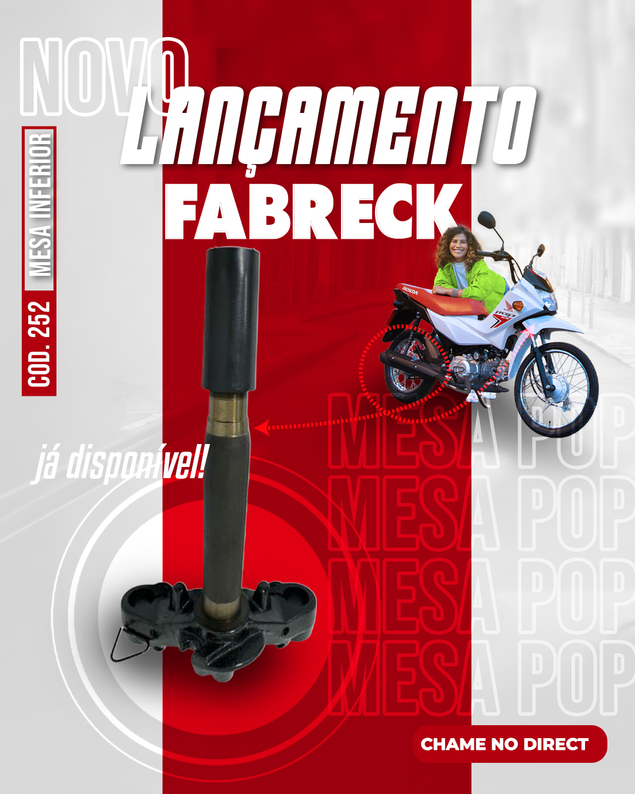
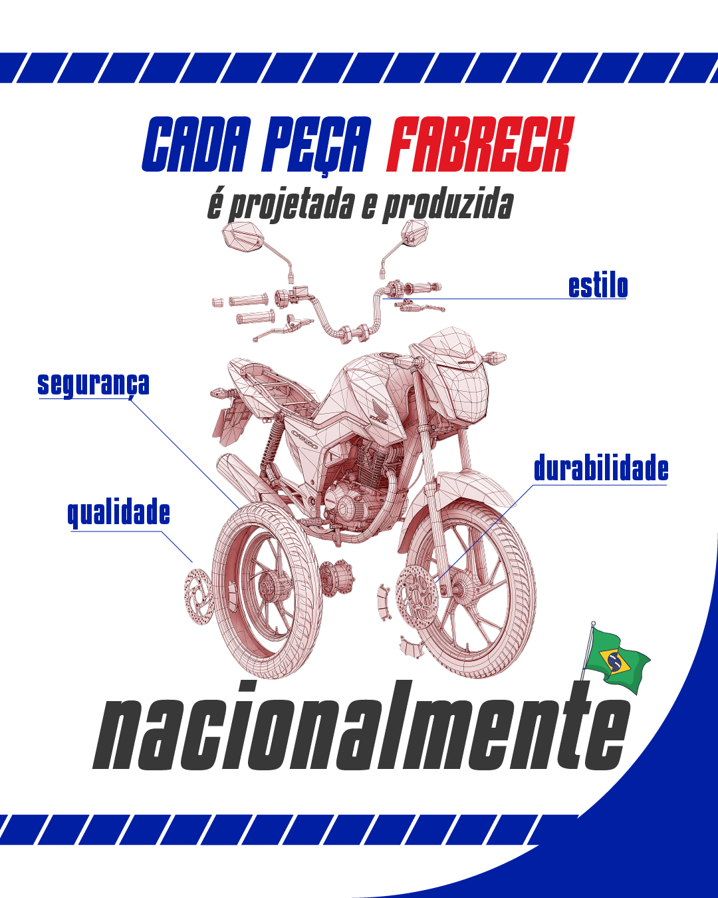

Case • Fabreck
Uma marca de motopeças pode falar com lojista e consumidor sem virar duas marcas.
Reposicionamento de comunicação, calendário editorial, linguagem de produto, comunidade e construção de presença digital.

Desafio
Organizar uma comunicação que precisava conversar com públicos diferentes.
De um lado, lojistas buscando informação objetiva e produto. Do outro, motociclistas, curiosidade, identificação e repertório.
Estratégia
Produto quando precisa vender. Comunidade quando precisa aproximar.
A proposta editorial separa momentos técnicos, lançamentos, itens de giro, comunicação para revendedores e conteúdos ligados ao universo de quem vive moto.
Resultado
O case completo entra com os números oficiais.
Esta página está estruturada para receber comparação anual, crescimento, engajamento, alcance e relação com vendas quando disponível.
Use somente números validados dos relatórios.

